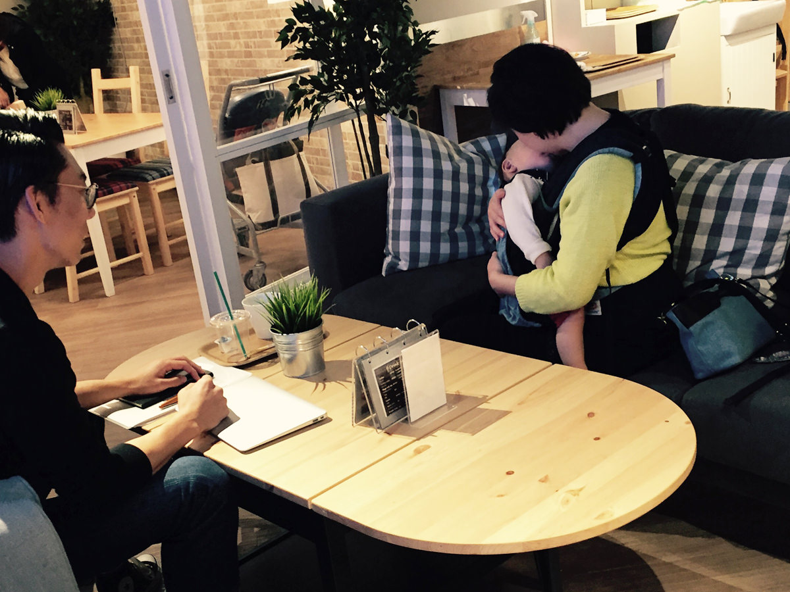
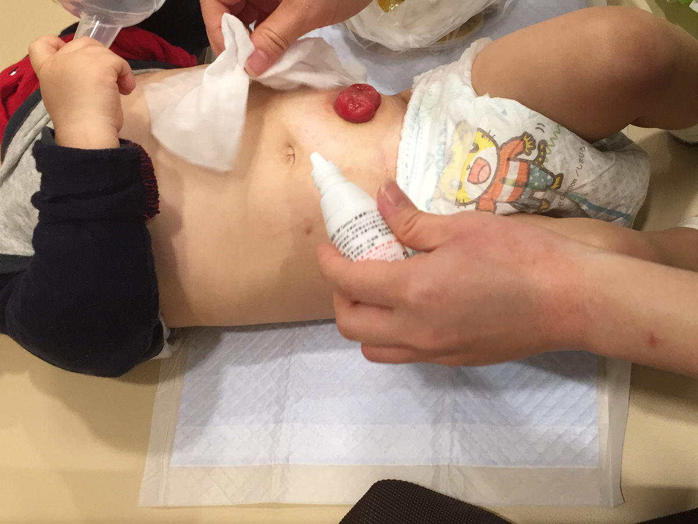
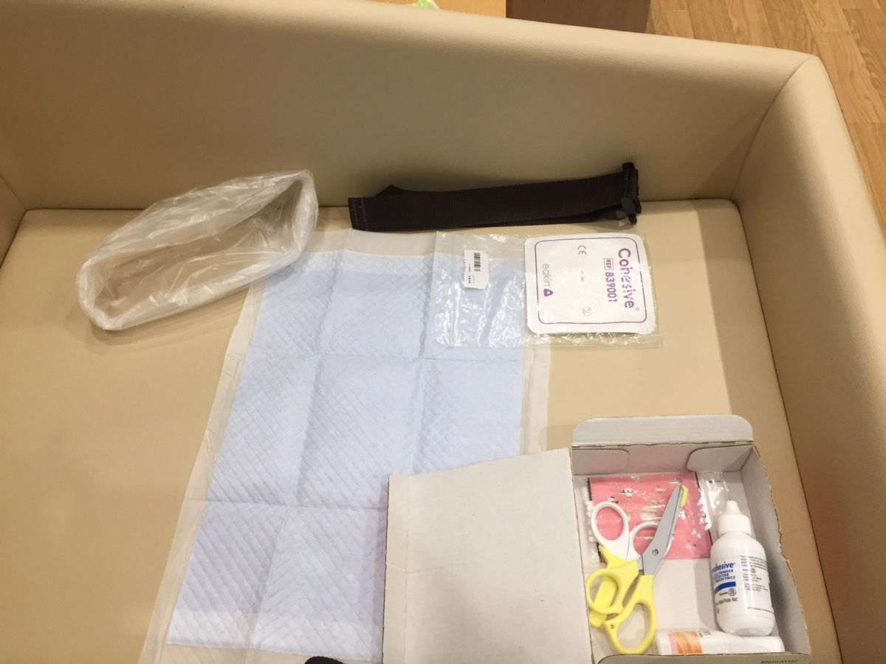
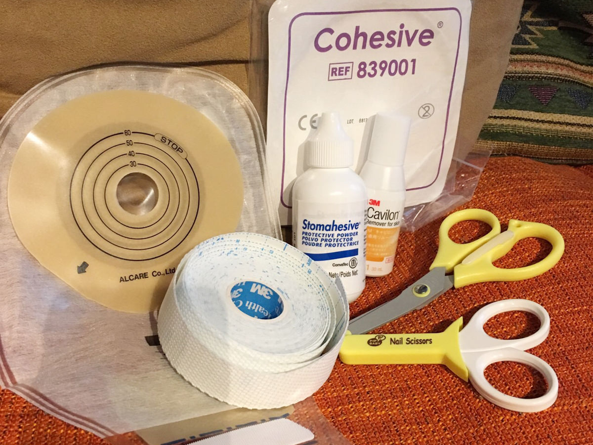

子どもの頃は男勝りな女の子
HANAさんの子どもの頃のことを教えてください。
HANA生まれも育ちも横浜で。子どものころは2歳上の兄の影響もあって、活発で男の子に間違われるくらいボーイッシュでした。小さい頃からピアノや歌が好きで、中学では少しだけ吹奏楽部でクラリネットをやっていました。高校3年間は、まあいろいろとたくさん遊びました（笑）
活発だったんですね。高校卒業後は何を？
HANA高校卒業後はとにかく勉強することから解放されたかったので地元企業へ就職、その後は数回転職もしました。26歳のときに、職場で出会った9歳年上の旦那と結婚しました。
それで29歳で専業主婦になって、30歳で第1子を出産しました。今32歳で、結婚後から順調に体重が増えている今日この頃です（笑）

お尻に体温計が入らない！
出産時のお話を聞かせてください。
HANA妊娠中は異常はまったく見つからなくて、出産してすぐ、お尻から体温を測る時に体温計が入らないということで鎖肛だとわかったようです。ただ帝王切開だったので、私は半身麻酔で産後すぐからずっと寝ちゃってたんですよ。なので、正直なところ出産直後のことをあまり覚えてないんです。
出産翌日には小児外科のある病院へ息子だけ転院して、その日のうちにいろいろな検査をして、鎖肛の手術（人工肛門造設）をしました。その検査の中で発覚したのが心室中隔欠損症です。その告知も主人1人で聞いて、私が主人から聞いたのは2～3日後だった気がします。
ご主人も大変でしたね。
HANA病気のことを最初に説明されたり、転院のことを決定するのも主人で、主人はだいぶ取り乱していました。私の両親も駆けつけてくれたのですが「いつ言えばいいんだろう」ってすごい困ったみたいです。
入院中はどのように過ごしていましたか？
HANA子どもは人口肛門の手術をして2週間入院になったので、私自身は4日で退院して、ずっと入院中の子どものところに通っていました。
「お尻の穴 開いてない 病気」をネットで調べたり。ご近所さんと話していて「それ鎖肛っていう病気だと思うよ」と言われました。私自身には先生からの説明がちゃんとなくて、退院前に「病名とかもあんまりよくわかっていないんですけど」みたいなことを看護師さんに言ったら「それはまずいですね（笑）」ってなって、 先生に来てもらって退院前にちゃんと話を聞いた、みたいな感じです。
私自身は「鎖肛」っていうのも聞いたことがなかったから「わあ、そんな病気あるんだ」みたいな感じでした。

ペット用のトイレシーツが活躍
聞きなれない病名で驚きますよね。退院後のケアについても病院で教えてもらいましたか？
HANA入院中も人工肛門はできていたんで、看護師さんがそのパウチの貼り替えだったり、日々、その便出しとかもやってくれていました。で、「これ退院したらどうなるんだろうなあ」って漠然と思ってたけど、でもそんなに詳しくは聞いていなくて（笑）退院の目処がたった頃に「じゃあそろそろ、お母さんも覚えてもらわないといけないんで」みたいな話になりました。
パウチの切り方だったり、どのメーカーがいいか、ストーマのサイズも合わせてみたり、排泄系の資格を持った看護師さんに教えてもらいました。退院後も「肌の相性をみて問題なければそのままこれを買ってください」って言われて、 カタログをもらって「ネットショップとかもあるから買いやすいですよ」と。
それは助成金は下りるんですか？
HANA永久ストーマの人はそういうのがあるんですけど、一時ストーマの場合はないんですよ。だから医療費控除が受けられる程度、風邪薬とかと同じような感覚ですよね。でも結構バカにならないし、最初は特にいろいろと揃えるのもあるし、パウチは10枚入って4000円とかするんですよ。
最初の頃なんかうまく貼れないから、しょっちゅう変えたりとかしてて、結構無くなっちゃうんですよね。慣れてきたら2〜3日に1回の交換で済むんですけど。
入院中はケアの際に専用のシートを身体の下に敷いてたんですけど、以前犬を飼っていた経験があったので、安いし、事足りるしと、家ではペット用のトイレシートを使用しています。

人工肛門を閉鎖してからは日々の生活がめちゃくちゃラクになりましたね。家計的にも…。
余裕のない時期のリフレッシュには
1週間の通院のスケジュールを教えてください。
HANA通院自体は週に1回です。ただそれは鎖肛のほうで、3ヶ月に1回とか半年に1回ぐらいで通ってる科もあります。全部、神奈川県立こども医療センターです。
お子さんのことで夫婦喧嘩することはありますか？
HANA無いですねえ…もともと喧嘩自体しないです。歳が離れてるのもあるんだと思うんですけど。パウチ交換は主人はまったくやらないです。主人は手先が不器用なので私がやった方が早いってのもあるんですけど、やりたがらないですね。「やって失敗するぐらいなら任せちゃおう」って思ってるみたいです。長く何年も続くなら教えたほうがいいと思ったけど、終わりがあることだから無理には教えませんでした。
リフレッシュ方法を教えてください。
HANAヘッドスパとか、短時間でできることをしています。普段子どもが泣いてイライラするようなことはあまりないのですが、人工肛門閉鎖前は泣くとパウチをよく剥がしちゃうんですよ。それがすごい怖かったですね。 たぶん痒いんだと思うんですけどね、貼ってる面が。で、掻いちゃってピーって自分で引っ張って剥がして血が出ちゃったり。
ケアがあるので丸々1日中出かけるようなことはあまり無かったんですが、1歳を過ぎた頃からは日々のケアも子育ても自信がついてきたのもあって「誰かに預けてちょっと外に行きたい」とか「離れたい」みたいなことが出てきましたね。たぶんそれも終わりが見えてきたことや、自分自身に余裕が出てきたっていうのがあります。
他の鎖肛のママと会いましたか？
HANA会ってないですね。最初は自分自身に余裕が無かったこともあって、病気の子のママ同士で交流を持っても、なんかもう、本当傷を舐め合うみたいになるだけなんじゃないかっていう、そういうマイナスなイメージしか持てなくて……それであんまり積極的にはそういうコミュニティとかには参加したいとは思ってなかったですね。
看護師さんも鎖肛の子を担当する事が珍しいと思うんですけど、結構ね、パウチ交換をするたんびに「新人連れて来て見ていいですか？」とかそういうのがしょっちゅうなんですよ。やっぱり病気のことは何も分からない人しか周りにもちろん居ないし、もう本当手探りでずっとやってきてるような感じです。
ママ友との交流は、今はしたくないわけではないですが、自分から積極的に交流したいとも思っていません。来るもの拒まず、いつでもウェルカムです。でも、明るく前向きな交流以外はNGです。

あと2人産みたいけれど……
今後、働くことは考えていますか？
HANA将来的には働きたいです。もともと事務職をやってきたので、次働くとしても事務なんだろうなという漠然としたものはあります。それよりもとりあえずそろそろ2人目欲しいなって感じですね。理想は3人なので。ただ今の状況だと、働きたいと思ったときに働けないっていう不安はあります。
息子さんを預けることができるか、というところですよね。
HANA保育士さんの友人、知人に毎回聞くんです。「鎖肛の子って今までいた事ある？」ってね。やっぱり聞いた事ないっていうのがほとんど。
先日、ストーマを閉鎖したので周りの子と比較しても、日々の生活はそんなに変わらないぐらいにはなるのかなと思ってます。でも毎日浣腸したりとかそういうケアはあるので、まったく何も無かった子と一緒っていうのは今後しばらくは無さそうです。
息子の場合はもう自宅での医療的ケアは必要ありませんが、ケアが必要な場合に預けられる保育園の情報等はインターネット上ではほぼ皆無です。区役所の窓口等で情報が得られるかどうかはわかりませんが、たとえば「ここの保育園だったら相談出来るよ」みたいな情報がネット上にあればすごく安心はできますよね。
現在の情報ツールを教えてください。
HANA情報はほとんど医師と看護師からもらってます。医師の説明で理解しきれなかった内容や、家族にうまく説明できない場合に参考までにインターネットを利用します。あとは同じ病気の子どもを持つ親のブログをたまに見たり。ただ、情報が多すぎたり同じ病気でも十人十色なので、直接息子を診てくれている先生を一番に信頼しています。
子育てで助かった支援やホッとした経験はありますか？
HANA区役所でやっている健診や、地域の無料で遊べる場所などはとても助かっています。あと横浜市は子どもの医療費に関して、他の都道府県や市より充実しているとは言い難いんですが、それでも入院と手術が何度もあったのでとっても助かりました。
錯肛以外にもこの子は、ミュラー管遺残症候群とか心室中隔欠損症もあったし、私自身に何か原因があったんじゃないかと思っていたんですけど、息子の病院で受けられるカウンセリングで、「まったく関係ないよ」とか、そういう話をしてくれてすごい楽になった部分があります。そういうふうに言ってくれる人が居るだけでもだいぶ違いますね。

苦労のあとで
子育てで嬉しかったことを教えてください。
HANAやっぱりどんどん良くなっていっていること。手術をする度に不安もあるけれどそれ以上に快方に向かっている喜びが大きいです。息子はもう手術はすべて終えたので、最後の退院のときは少し寂しい気持ちもありましたが、言葉にできない感動がありました。
同じ境遇のご家族に伝えたいことはありますか？
HANAいつでも、力になります。人工肛門のパウチ交換の手順や、パウチ以外のケアグッズで便利だったもののことなどお伝えできます。必ずよくなりますよ！
ご協力いただいたHANAさま、Yくんに心から感謝します。